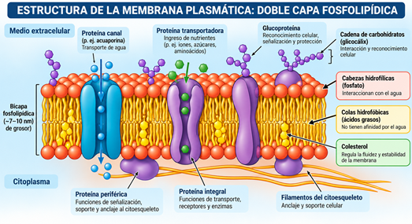
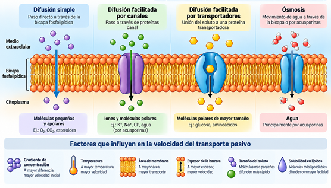
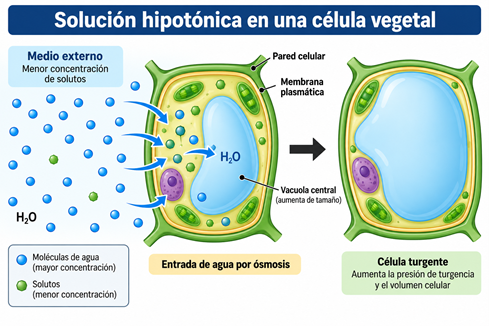

Estructura, transporte, ósmosis y aplicaciones biotecnológicas en Agronomía
La membrana plasmática es el límite dinámico que separa el interior de la célula del medio externo. No es una envoltura pasiva: regula el intercambio de agua, iones, nutrientes y desechos; recibe señales; organiza proteínas y participa en la respuesta de la planta a las condiciones del suelo y del ambiente. En una célula vegetal, su funcionamiento se articula con la pared celular, la vacuola, el citoplasma y los sistemas de transporte que sostienen la turgencia, la nutrición mineral y el crecimiento.
Para la Agronomía, estudiar la membrana plasmática permite interpretar fenómenos que ocurren en el campo: marchitez por déficit hídrico, plasmólisis por exceso de sales, absorción de nutrientes, toxicidad por aluminio en suelos ácidos y tolerancia de los cultivos a la salinidad. También permite comprender cómo la biotecnología utiliza genes y proteínas transportadoras para desarrollar variedades más resistentes.
📌 Pregunta orientadora
¿Cómo regula la membrana plasmática la entrada y salida de agua y nutrientes, y de qué manera contribuye a la supervivencia de las plantas en suelos salinos o ácidos?
💡 Atajos de teclado: Presiona Espacio para reproducir/pausar, Tab para detener
Objetivos de aprendizaje
Al finalizar esta OVA, el estudiante estará en capacidad de:
🧠Explicar qué es la membrana plasmática y relacionar su función con la homeostasis de la célula vegetal..
🔍Identificar los componentes del modelo del mosaico fluido: fosfolípidos, colesterol y otros lípidos, proteínas integrales y periféricas, y carbohidratos asociados.
📉Distinguir transporte pasivo, difusión simple, difusión facilitada, ósmosis y transporte activo, indicando el papel del gradiente y de la energía celular.
🔬Analizar cómo la turgencia, la plasmólisis y el movimiento de solutos afectan el establecimiento y el rendimiento de los cultivos.
🌾Interpretar estudios de caso sobre salinidad, toxicidad por aluminio y déficit hídrico desde la función de los transportadores de membrana.
También llamada plasmalema, es una membrana biológica continua que delimita la célula y controla su composición química. El libro base la describe como el límite entre el medio intracelular y el extracelular, con permeabilidad selectiva y receptores que permiten la comunicación celular (UAS-DGEP, 2012, pp. 50–51). Su espesor es tan pequeño que se observa con microscopía electrónica y no con microscopía óptica convencional.
La permeabilidad selectiva significa que el paso de una sustancia depende de su tamaño, carga, polaridad, solubilidad en lípidos, gradiente de concentración y presencia de proteínas específicas. Esta selectividad mantiene condiciones internas compatibles con la respiración, la fotosíntesis, el metabolismo y la división celular.
Figura 1. Visualización por Microscopía Electrónica de Transmisión (MET)
Componentes principales:
Bicapa de fosfolípidos: Forma la estructura básica de la membrana. Los fosfolípidos tienen una cabeza hidrofílica (afinidad por el agua) y dos colas hidrofóbicas (repelencia al agua), lo que les permite organizarse en una doble capa.
Proteínas: Incrustadas en la bicapa, cumplen funciones específicas como transporte, recepción de señales y catálisis de reacciones.
Carbohidratos: Unidos a proteínas (glicoproteínas) o lípidos (glicolípidos) en la superficie externa, participan en el reconocimiento celular.
Colesterol: En células animales, ayuda a estabilizar la membrana. En plantas, su función es realizada por otros esteroles como el estigmasterol.
Modelo del mosaico fluido:
Propuesto por Singer y Nicolson (1972), describe la membrana como un mosaico dinámico donde los fosfolípidos y proteínas pueden moverse lateralmente, conferiendo flexibilidad y capacidad de adaptación a la célula.

Figura 2. Representación didáctica del modelo del mosaico fluido. Elaboración propia a partir de UAS-DGEP (2012, pp. 50–54).
El transporte a través de la membrana puede clasificarse según el uso de energía y la dirección del movimiento:
Mecanismo
Usa ATP directamente
Dirección general
Ejemplo agronómico
Difusión simple
No
A favor del gradiente
Movimiento de gases como O₂ y CO₂
Difusión facilitada
No
A favor del gradiente
Movimiento de iones o azúcares por proteínas específicas
Ósmosis
No
Movimiento neto de agua según gradiente osmótico
Absorción de agua por la raíz y cambios de turgencia
Transporte activo primario
Sí
En contra del gradiente electroquímico
Bombas de H⁺ que generan fuerza motriz para captar nutrientes
Transporte activo secundario
Indirectamente
Acoplado al gradiente de otro ion
Cotransporte de nitrato, fosfato o azúcares
Endocitosis/exocitosis
Sí, de forma indirecta
Mediante vesículas
Secreción de compuestos de defensa o comunicación con microorganismos
Transporte pasivo: Es el movimiento neto de una sustancia a favor de su gradiente de concentración o electroquímico, sin gasto directo de ATP. El gradiente representa una forma de energía potencial: cuanto mayor es la diferencia entre dos zonas, mayor puede ser la velocidad inicial del movimiento. El tamaño, la temperatura, el área de membrana, el espesor de la barrera y la solubilidad del soluto también influyen (OpenStax, 2018).

Figura 3. Representación de la difusión facilitada. Elaboración propia.
Ósmosis: Es el movimiento neto de agua a través de una membrana semipermeable desde una región con mayor disponibilidad de agua hacia otra con menor disponibilidad de agua. En términos prácticos, el agua tiende a desplazarse hacia el lado con mayor concentración efectiva de solutos. La dirección exacta depende de la permeabilidad de la membrana, la concentración de solutos y el potencial hídrico.
Solución hipotónica:
El exterior tiene menor concentración de solutos que el interior; entra agua y la célula vegetal puede aumentar su turgencia.
Turgencia: presión del contenido celular contra la pared; contribuye al sostén de hojas y tallos herbáceos.

Figura 4. Representación ilustrada de solución hipotónica. Elaboración propia.
Solución isotónica:
No hay movimiento neto de agua; la entrada y salida ocurren a velocidades semejantes.
Figura 5. Representación didáctica de la solución isotónica.
Solución hipertónica:
El exterior tiene mayor concentración de solutos; sale agua, disminuye la turgencia y puede ocurrir plasmólisis.
Plasmólisis: retracción del protoplasto por pérdida de agua; si el estrés se prolonga puede afectar fotosíntesis, crecimiento y supervivencia.
Figura 6. Representación ilustrada de solución hipertónica.
Aplicación de campo:
Una solución fertilizante demasiado concentrada puede aumentar la salinidad de la rizosfera. Aunque haya agua en el suelo, el potencial hídrico externo puede ser tan bajo que la raíz tenga dificultad para absorberla. Por eso la dosis, la conductividad eléctrica y el fraccionamiento del riego deben considerarse junto con la nutrición.
Es el transporte contra un gradiente y requiere energía. En la célula vegetal, las bombas de protones de la membrana plasmática utilizan ATP para expulsar H⁺. Con ello generan un gradiente eléctrico y químico que puede impulsar la entrada de nitrato, fosfato, sulfato y otros solutos mediante cotransportadores.
Transporte activo primario:
Cuando la proteína usa ATP directamente para mover sustancias contra su gradiente.
Transporte activo secundario:
Cuando aprovecha el gradiente producido por otra bomba. Las proteínas transportadoras cambian de conformación para alternar la exposición de su sitio de unión hacia un lado u otro de la membrana.
Tipos de transportadores:
Uniportadores: Transportan una sola sustancia en una dirección.
Simportadores: Transportan dos o más sustancias en la misma dirección.
Antiportadores: Transportan dos sustancias en direcciones opuestas.
Esta relación explica por qué la respiración y el estado energético de la raíz afectan la absorción de nutrientes.
Caso 1. Transportadores HKT y tolerancia a la salinidad
La salinidad expone a la planta a dos problemas simultáneos: dificultad para captar agua y toxicidad por Na⁺. Los transportadores HKT participan en el control del sodio y del potasio. En trigo, la incorporación de una variante favorable de HKT1;5 desde un pariente más tolerante aumentó en un 25% el rendimiento de grano en suelo salino en ensayos de campo descritos en la literatura científica.
Relevancia agronómica: el caso muestra cómo un componente de membrana puede convertirse en marcador para selección asistida, objetivo de mejoramiento genético y criterio para evaluar germoplasma en ambientes salinos. No reemplaza el manejo del riego y del drenaje, pero puede complementarlo.
Caso 2. TaALMT1 y tolerancia al aluminio en suelos ácidos
En suelos ácidos, el Al³⁺ puede afectar las raíces y limitar el crecimiento. El gen TaALMT1 codifica un canal activado por aluminio que favorece la salida de malato desde la raíz. El malato puede complejar el aluminio en la zona externa de la raíz y disminuir su toxicidad. La literatura reporta que la expresión de TaALMT1 en cebada mejoró la tolerancia al aluminio y el rendimiento en suelo ácido.
Relevancia agronómica: este mecanismo se integra con prácticas como el encalado, el análisis de pH y la selección de variedades adaptadas. La biotecnología aporta una herramienta genética, pero la recomendación debe considerar diagnóstico de suelo y manejo local.
Caso 3. Acuaporinas y déficit hídrico
Las acuaporinas son proteínas de membrana que forman canales selectivos para el agua. Su abundancia y actividad pueden variar según la sequía, la salinidad, la temperatura y el estado de la raíz. Una reducción importante de acuaporinas funcionales disminuye la conductividad hidráulica de la raíz: el agua puede estar presente en el suelo, pero su movimiento hacia el xilema y las hojas se vuelve más limitado.
Relevancia agronómica: el estudio de acuaporinas apoya la selección de genotipos con mejor eficiencia en uso del agua y ayuda a interpretar por qué dos cultivares con el mismo riego pueden mostrar distinta marchitez. La respuesta depende de la especie, el tejido y la intensidad del estrés.
Caso de análisis: pérdida funcional de HKT1;5 en un cultivo sensible a la salinidad
Si una planta carece de una versión funcional de HKT1;5, o expresa muy poco este transportador, puede retirar menos Na⁺ del flujo del xilema. En consecuencia, más sodio puede llegar a las hojas, acumularse en tejidos fotosintéticos y alterar el balance Na⁺/K⁺. Esto puede manifestarse como clorosis o necrosis marginal, menor expansión foliar, reducción de fotosíntesis y pérdida de rendimiento. El problema no significa que "falte toda la membrana"; falta o funciona mal una proteína específica que regula el transporte iónico.
Análisis agronómico del caso:
Causa celular: disminuye la recuperación o exclusión de Na⁺ en tejidos conductores.
Consecuencia fisiológica: se altera la homeostasis iónica y el potencial osmótico.
Indicadores observables: crecimiento reducido, daño foliar, menor biomasa y menor rendimiento en suelo salino.
Confirmación: comparar genotipos en condiciones controladas, medir Na⁺ y K⁺ en raíz y hoja, y analizar la expresión o variante del gen transportador.
Respuesta de manejo: mejorar drenaje, controlar la conductividad del agua, seleccionar variedades tolerantes y ajustar la fertilización potásica sin asumir que una sola práctica corrige el problema.
La membrana plasmática conecta la escala molecular con las decisiones de manejo. Un riego modifica el estado hídrico y la concentración de solutos; una fertilización cambia el gradiente químico de la rizosfera; el pH del suelo modifica la disponibilidad y toxicidad de elementos; y un patógeno puede alterar transportadores o aprovecharlos para obtener azúcares. El agrónomo puede usar esta relación para formular hipótesis, interpretar síntomas y escoger mediciones.
💧 Riego
Evitar alternar déficit severo con encharcamiento; ambos extremos modifican la función de membrana y la respiración radicular.
🌱 Fertilización
Fraccionar nutrientes y vigilar la conductividad eléctrica para reducir estrés osmótico.
🔬 Suelos ácidos
Medir pH y aluminio intercambiable; combinar encalado con genotipos tolerantes.
🧂 Salinidad
Evaluar agua y suelo, asegurar drenaje y escoger variedades con mejor exclusión o compartimentación de Na⁺.
Manejo integrado
Relacionar síntomas foliares con análisis de tejido, raíz, suelo y agua, en vez de atribuir todo a una sola deficiencia.
Actividades prácticas
🧪 Actividad 1: Ósmosis en tejido vegetal
Propósito:
Observar cambios de masa y textura en un tejido vegetal expuesto a soluciones con distinta concentración de solutos.
Materiales:
Trozos iguales de papa o yuca
Balanza
Vasos
Agua
Soluciones de sal o sacarosa de baja, media y alta concentración
Toallas de papel y regla
Procedimiento:
Pesar los trozos
Colocarlos durante 30-45 minutos en las soluciones
Secar suavemente y volver a pesar
Registrar masa inicial, masa final, cambio de masa, textura y aspecto
Preguntas de análisis:
¿En cuál solución entró agua?
¿En cuál salió?
¿Cuál se aproxima a la condición isotónica?
¿Cómo se relaciona el resultado con el riego y la salinidad de la rizosfera?
🔬 Actividad 2: Plasmólisis en epidermis de cebolla
Propósito:
Reconocer la retracción del protoplasto cuando el tejido se coloca en una solución hipertónica. Elaborar un dibujo científico con pared celular, membrana y protoplasto. Si se dispone de microscopio, comparar agua destilada con una solución salina.
Materiales:
Epidermis de cebolla
Microscopio (opcional)
Portaobjetos y cubreobjetos
Agua destilada
Solución salina concentrada
🌾 Actividad 3: Estudio de caso agronómico
Situación:
Analizar una parcela con hojas quemadas, crecimiento reducido y agua de riego con alta conductividad eléctrica.
Tareas:
Proponer tres hipótesis celulares
Seleccionar cuatro mediciones
Recomendar dos acciones de manejo
Requisito:
La explicación debe diferenciar estrés osmótico, toxicidad iónica y deficiencia nutricional.
Juegos Interactivos
🔍 Sopa de Letras: Membrana Plasmática
Instrucciones: Encuentra las siguientes palabras relacionadas con la membrana plasmática:
.png)